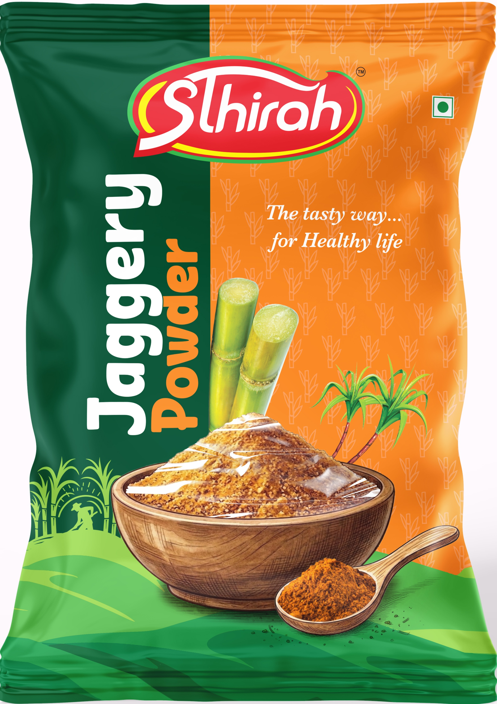
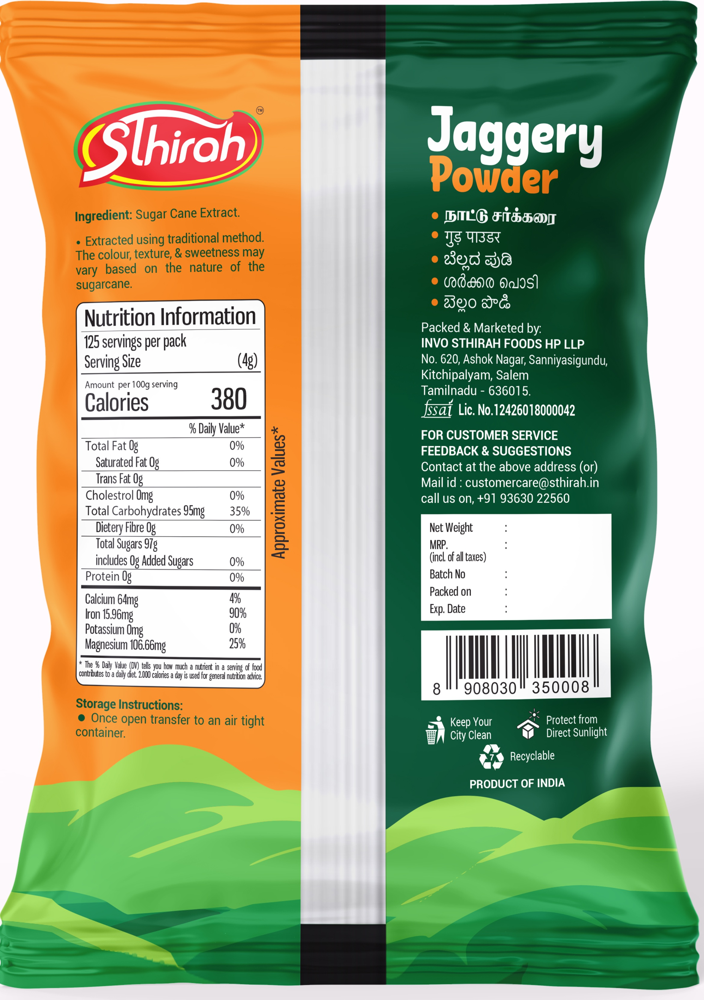

Jaggery is roughly 65–85% sucrose. It will raise your blood sugar. Anyone selling it to you as a health food is selling you something else as well.
What we can honestly say is this: ours is sugar that hasn't had everything stripped out of it, and nothing chemical put back in. The molasses stays — which is where the colour, the caramel flavour and the trace minerals live. That's the whole pitch.
The most common jaggery whitener. Tested for, batch by batch.
A bleaching agent with no business in food.
Used industrially to clarify juice. Not used here.
The brown is the molasses. That's all it is.
Store it dry and it stays loose on its own.
Jaggery powder is a traditional natural sweetener prepared directly from boiled sugarcane juice. Unlike modern refined white sugar, it retains its natural molasses and inherent minerals, offering a warm caramel flavor that enhances your daily food and drinks.
125 servings per pack | Serving Size (4g)
* The % Daily Value (DV) tells you how much a nutrient in a serving of food contributes to a daily diet. 2,000 calories a day is used for general nutrition advice.


from ₹58.00
Premium quality cane jaggery powder, sourced directly from our farm. Rich in iron, aids digestion, and acts as a natural detoxifier. Sthirah ensures pure, unadulterated sweetness for your healthy lifestyle.
"The purest jaggery powder I have ever tasted! It melts perfectly in my morning coffee and adds such a rich caramel flavor without any chemical aftertaste."
"I love that it's completely chemical-free and grown on their own farm. It gives me peace of mind knowing what my kids are eating. Highly recommended!"
"Switched from white sugar to Sthirah jaggery powder 3 months ago. The iron and mineral benefits are a huge plus. Beautiful packaging too!"
The name "Sthirah" originates from deep cultural roots, embodying qualities of steadfastness, permanence, balance, and unwavering stability. For us, Sthirah is more than just a brand name—it is a firm commitment to keeping our food honest, unadorned, and deeply connected to nature.
Operated by INVO STHIRAH FOODS HP LLP out of Salem, Tamil Nadu, we partner directly with trusted agricultural networks and farmers who cultivate our core ingredients with patience and care. We believe that true quality cannot be rushed in an industrial factory; it begins in fertile soil, under open sunlight, and is nurtured by traditional farming wisdom passed down through generations.
Modern commercial food supply chains often strip away natural goodness through heavy chemical refining and industrial processing. At Sthirah, we do things differently. Our flagship cane jaggery powder is extracted from freshly harvested sugarcane, boiled down using traditional, time-honored techniques that preserve its rich mineral profile, natural molasses, and deep caramel aroma.